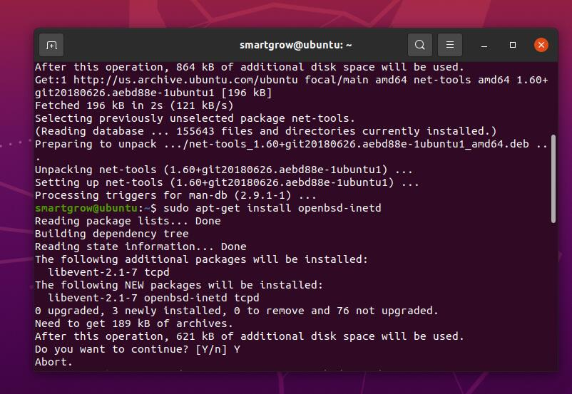
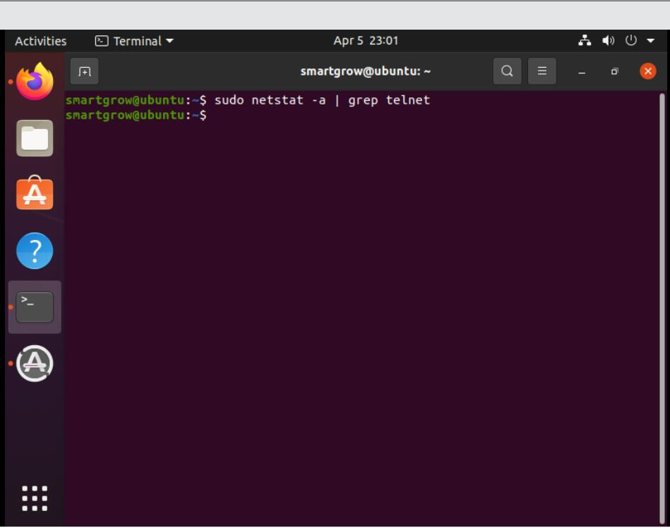

step1. 更新apt工具
执行如下命令：sudo apt-get update按回车 (以后输入完命令后均按回车，不再重复)，然后输入密码（密码输入时字符串均为不可见状态且不占位，具体表现为好像没有内容输入，实际上已经是输入状态），输入完成后点击回车。
如果出现下如图情况，说明操作成功。
step2.安装net-tools
执行如下命令：sudo apt-get install net-tools
如果出现下如图情况，说明操作成功。
step3.安装openbsd-inetd
执行如下命令：sudo apt-get install openbsd-inetd
在询问是否确认时输入Y,如图。
如果出现下如图情况，说明操作成功。
如果出现其他情况，如图
再次执行sudo apt-get install openbsd-inetd并在询问中输入Y。如图：
step4.安装telnetd
执行如下命令：sudo apt-get install telnetd
如果出现下如图情况，说明操作成功。
然后执行如下命令：sudo gedit /etc/inetd.conf
此时会打开一个新的窗口，如果窗口中出现红色框中的内容，表示成功，关闭该窗口即可。
step5.重启openbsd-inetd
执行如下命令：/etc/init.d/openbsd-inetd restart
在弹出的对话框中输入密码。
如果出现下如图情况，说明操作成功。
step6.查看telnet运行状态
执行如下命令：sudo netstat -a | grep telnet
如果输出tcp 0 0 *:telnet *:* LISTEN，说明操作成功。如图
step7.telnet登陆测试
执行如下命令：telnet 127.0.0.1。然后输入用户名密码。(用户名：smartgrow，密码：Grow_@0!6 )如图：

如果出现下如图情况，说明操作成功。